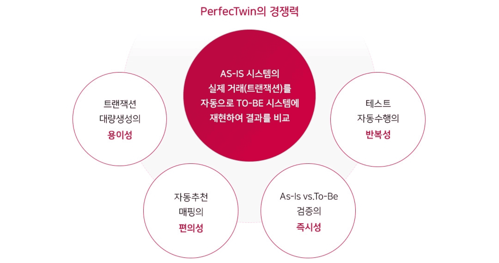
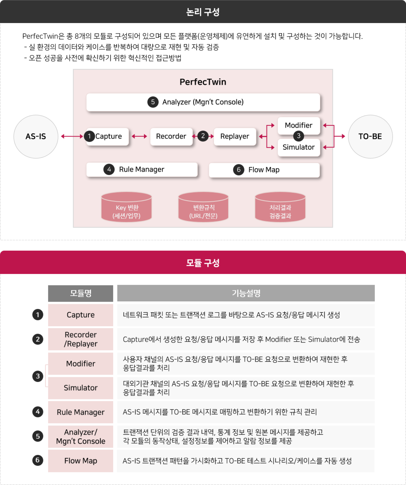
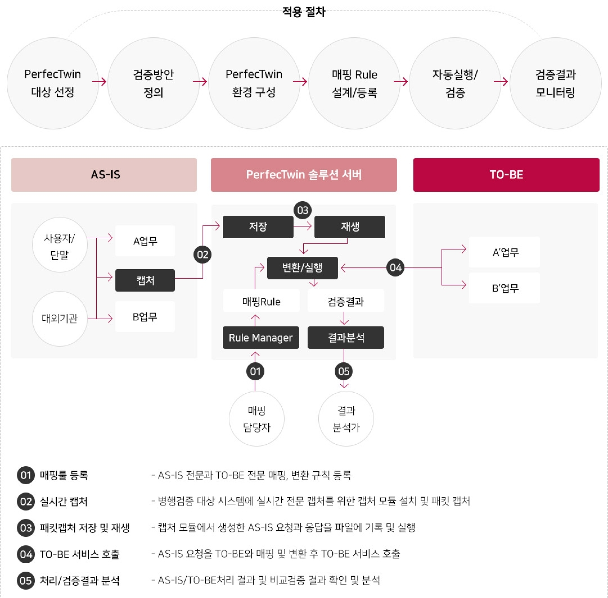
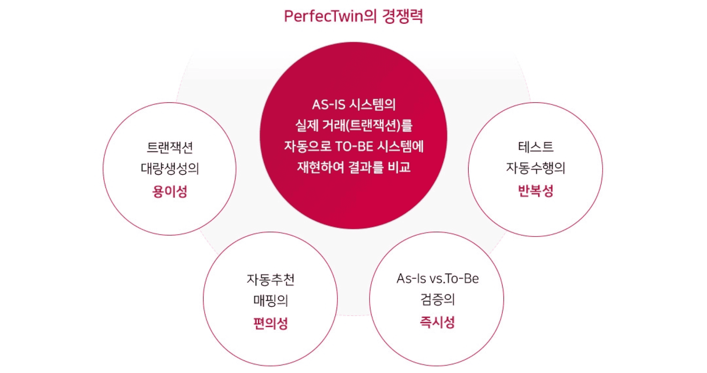
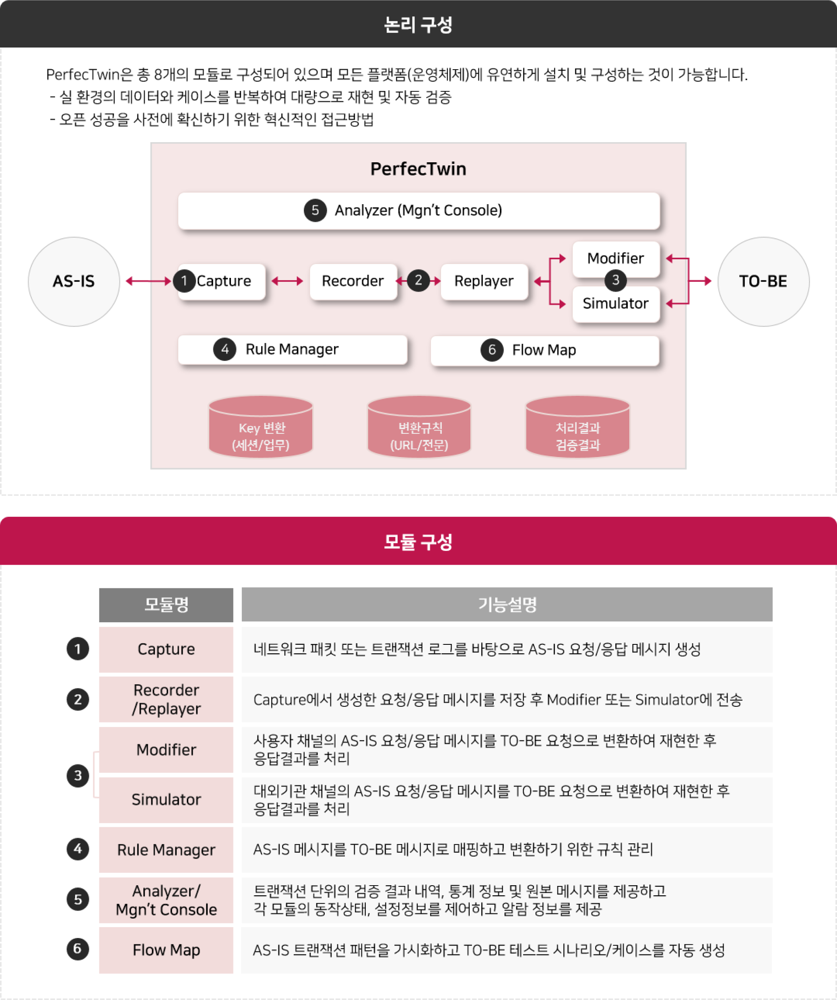
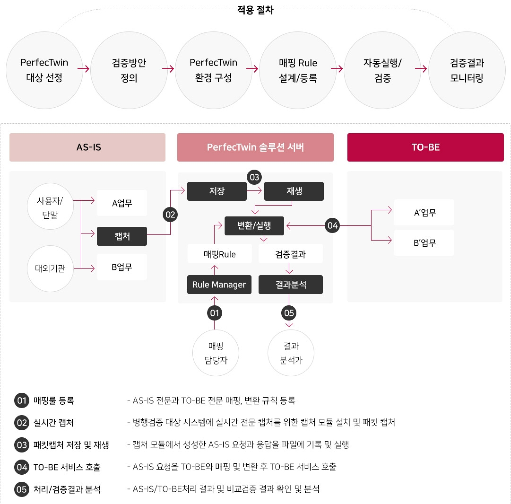

PerfecTwin
실 거래 자동 재현으로 개발 기능 완성도 및
성능을 검증하는 검증 자동화 솔루션
PerfecTwin은 실제 발생하고 있는 사용자 및 대외 연계 거래를
TO-BE 시스템에서 반복 재현함으로써 오픈 시 발생할 수
있는 다양한 결함들을 사전에 완벽히 차단하여 시스템 품질에
대한 확신을 가질 수 있도록 합니다.
 





PerfecTwin · FAQ
Q.
테스트 케이스 정교화나 검토가 따로 필요하진 않나요?

A.
네. AS-IS 발생 트랜젝션으로 TO-BE 테스트 케이스 자동 생성 효과가 있어 따로 검토가 불필요합니다.
Q.
검증 결과를 어떻게 확인할 수 있나요?
A.
검증 결과에 대한 대시보드를 제공하고 있으며, 리포트 형태로 데이터 확인, 결과 비교, 시각화 등 여러 형태로 제공하고 있습니다.
Q.
오픈 시점의 시스템 품질을 사전에 확인 가능하나요?
A.
네. PerfecTwin은 실제 운영 환경의 거래를 자동으로 재현하여 오픈 시점의 안정성을 사전에 검증할 수 있습니다. 이를 통해 시스템 품질에 대한 확신을 갖고 오픈할 수 있습니다.
Q.
대량의 데이터를 완벽하게 검증할 수 있나요?
A.
네. 자동화된 테스트 수행 기능을 통해 수백만 건의 데이터도 효율적으로 검증할 수 있습니다. 이를 통해 사람이 직접 테스트하기 어려운 대량의 데이터도 정확하게 검증할 수 있습니다.